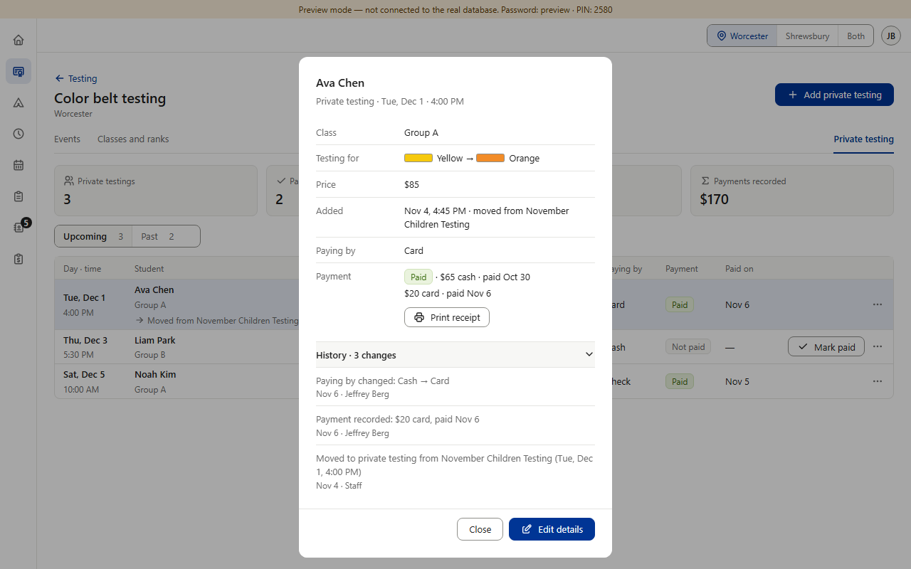
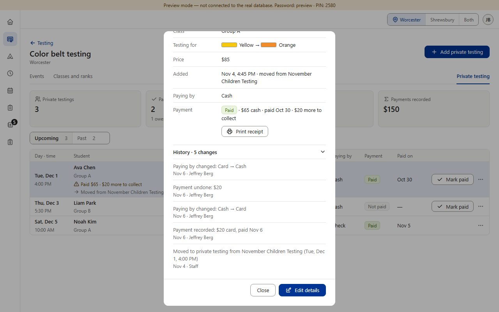
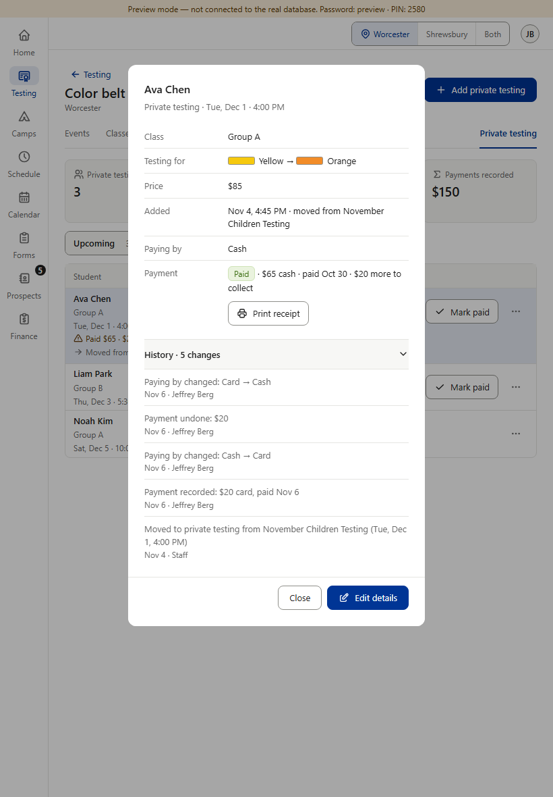
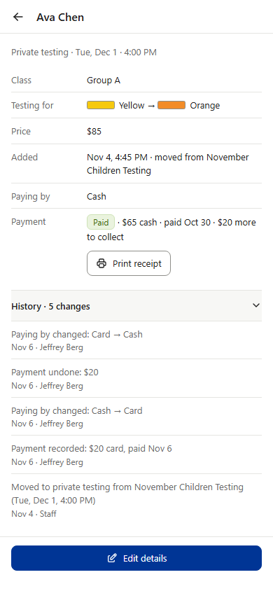
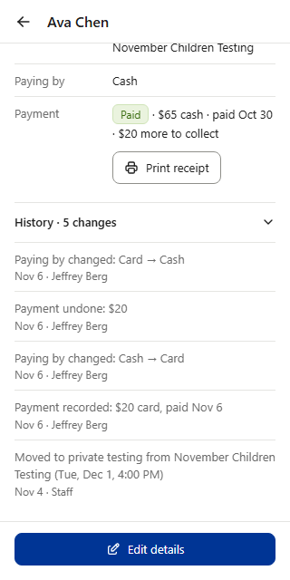
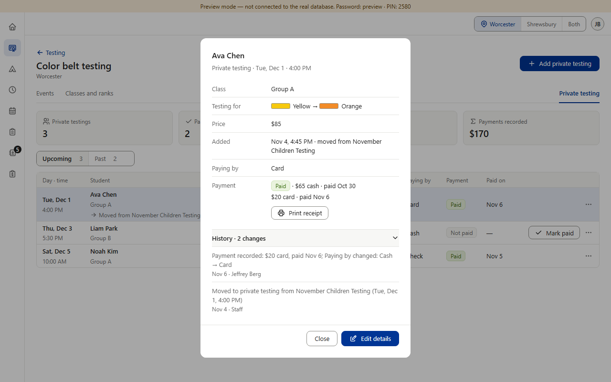
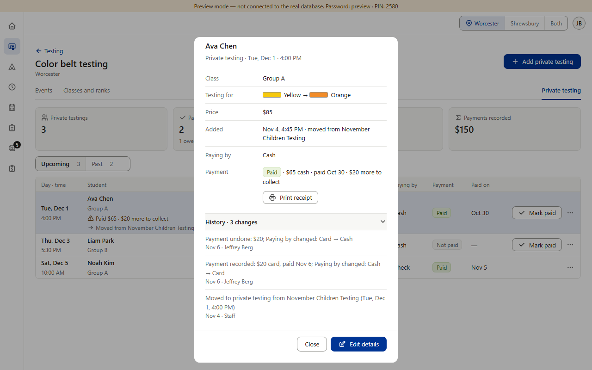
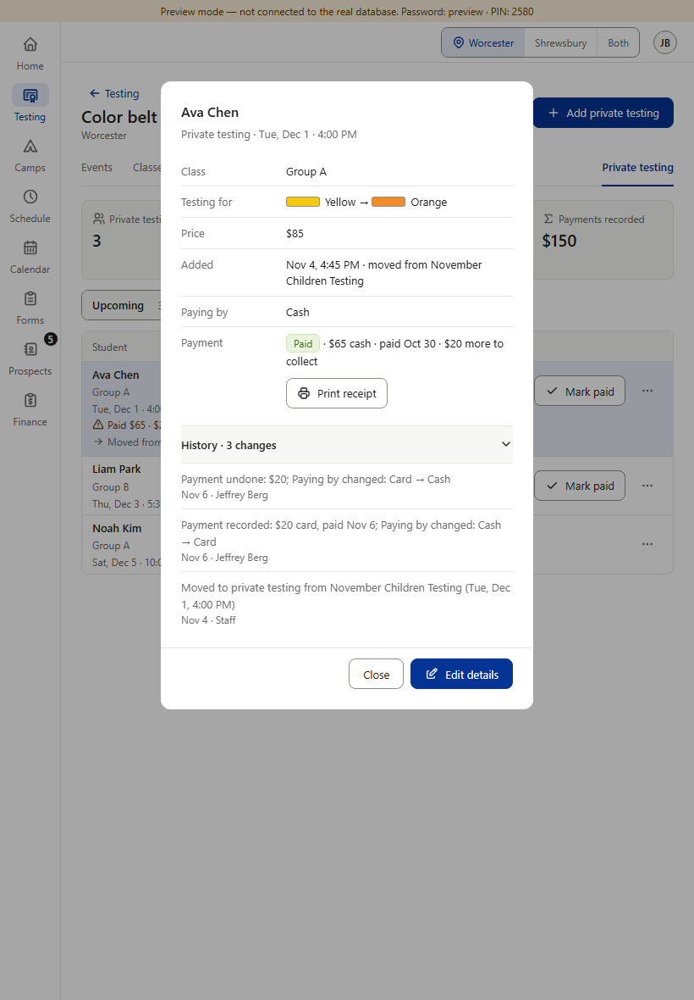
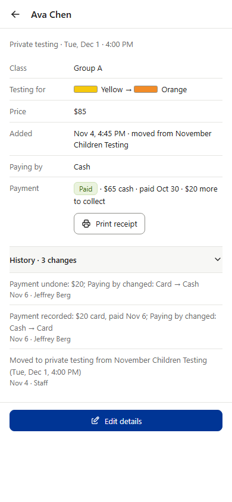
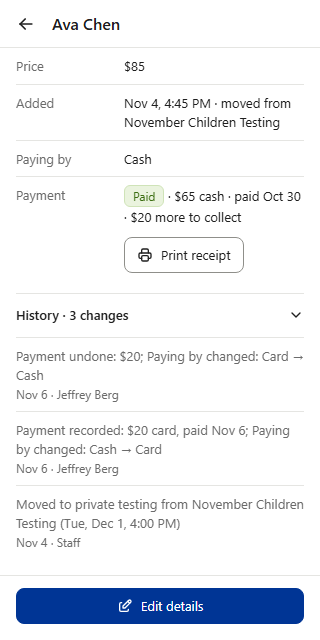

Rulebook v1.055 (a) (you approved A), as Camps does (v0.736): a Mark paid, Undo payment or Edit payment that also changes Paying by is ONE entry, money first, joined with “; ”. Today it shows as two entries and “History · N changes” counts both. The words themselves stay as today (they change later with Dashboard core's R1-07, which draws one set of payment and history words for every section). Example in preview: Ava Chen (Paying by Cash) marked paid $20 by card, then that payment undone. The After column is drawn on top of the real preview page.









